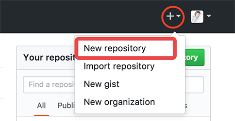

如何快速搭建Github Pages
[摘要]本文详细叙述了简易快速博客系统的搭建，包括创建自己的github账号，安装所需软件工具，注册免费域名，项目搭建，修改主题，本地调试，部署到github上等等，我会尽量采用简单易懂的语言，助力大家快速搭建属于自己的博客。
为什么要采用Github Pages + hexo来搭建自己的博客
一直以来都有做自己博客的想法，但苦于好几年没接触过后端知识，服务器端开发成为了阻挠我付诸行动的阻力，但这个想法在4月1号突然变得尤为强烈，这一次我变得尤为行动派，问了两个写博客的朋友，小X会全栈开发，他采用了php+mySQl的方式花了一个星期搭建了自己的博客，又花了两天时间为博客写了一套皮肤，买域名买空间，备案，到上线花了差不多一个多月的时间，这样的系统完全可以按照自己的需求量身定做，但对于我这样的纯前端技术人员，虽然大学学过java，sql，但是工作以后接触较少想要捡回来也不容易，另外我比较擅长的是前后端分离的开发模式，对于这样的前端开发我的把控能力比较强，但是接口开发对我来说也是一个难点，问过公司的小伙伴，他们采用的是node.js和mongodb，node.js应该是前端人员的福音，为很多不会java、php的前端人士提供了另一中服务器开发的新方向，但是对我来说，目前最主要的不是去学习用node.js开发接口，而是怎样快速的搭建自己的博客，于是我又去问了小Y，小Y给我提供了一个新的思路就是Github Pages。听说过但是没用过，也不知道具体的实现方式，于是我就去网上搜索资料，大量的教程发表时间都是2013~2014年，Github Pages应该在哪个时候比较流行的方式，到现在已经发展的很成熟，扩展性也很强了，hexo就是其中一个很强大的框架，借助于它，任何人都能够很轻易的搭建自己的博客系统，只需要修改一些参数，就能让你的博客呈现出只属于你自己的风格，hexo官方也提供了很多的主题，并且世界各地的coders还在源源不断的开发新主题和对已经被广泛应用的主题进行优化改良，于是我毫不犹豫的选择了用Github Pages + hexo的方式花了几个小时的时间来搭建自己的第一个博客系统。
什么样的人适合用Github Pages来搭建博客
Github Pages是一个是可以被用来托管在github上的静态网页，它不需要服务器支撑，是纯静态的网页，文章采用markdown语法，根据语法教程相信你能很快学会它的写作语法。搭建过程不难，但需要你有：
- 足够的耐心尤其是小白用户；
- 一定的学习能力和钻研精神；
- 最好能有些编程的基本知识。
好了，废话不多说了，马上开始我们的博客搭建。
运行环境
- Git：用于从github上clone代码，完成项目的启动、部署等等；
- NodeJS：所用框架hexo是基于node.js的，我们需要安装node.js来安装生产静态网页的插件、以及对插件进行升级管理等等。相关教程网上已经很多了，这里就不一一赘述，同学们可以根据自己的电脑系统去网上下载安装以及配置。
补充：由于墙的原因，在使用npm（npm是随同NodeJS一起安装的包管理工具）安装一些框架插件的时候速度会非常慢，在此建议大家安装淘宝镜像cnpm，windows用户进入任意文件夹，点击鼠标右键，选择git bash打开命令行工具；mac用户找到”finder->应用程序->实用工具->终端”，打开命令行工具，全局安装cnpm。
1$ npm install -g cnpm --registry=https://registry.npm.taobao.org安装成功以后就可以使用cnpm代替npm来提高安装速度。
注册github账号，并创建自己的仓库
github号称程序员的facebook，访问 github官网 和一般网站的注册方式一样，通过username/email/password进行sign up，这三个关键信息请牢牢记住，在未来进行项目部署的时候会需要相关信息。如有github账户，请直接sign in。登录github之后，点击右上角头像旁边的+号，选择”New repository”

你现在可以试着访问上面的博客地址，看看页面是否呈现可readme.md文件中的文字。
本地使用hexo框架，启动本地调试，并把项目部署到github上
前面已经安装好了Git和node.js，现在使用命令行工具安装hexo框架到本地。
(1). 打开命令行工具全局安装hexo-cli框架。
(2). 进入新建的项目文件夹，初始化hexo
(3). 本地安装插件
让我们先来了解一下生成的目录结构
- node_modules 框架所需的插件、通过npm install安装的都放在里面
- scaffolds 里面有hexo的三种布局方式，默认post
- source 资源文件夹，以后你所写的博客文章都在其中的_posts文件夹中
- themes 主题文件夹
- _config.yml 配置文件
其他暂时不需要了解
(4). 本地启动调试，默认端口是4000
这个主题是hexo默认主题landscape，不喜欢的可以在替换掉，后面教程会详细介绍。
(5). 生成静态文件
可以看到文件夹中生成了public文件夹，这个就是会被部署到github上的文件
(6). 部署到github上
修改_config.yml最下面的deploy中的参数，其中repo为github上你的博客仓库地址，并不是博客的域名。
|
|
|
|
现在要建立你的本地项目和github项目之间的联系，可以使用SSH key，具体配置方法Github的SSH KEY配置
成功后你会看到github上出现了public文件夹中的文件，说明部署成功。现在你可以登录博客地址，查看是否和本地localhost://4000中的内容一样。是否发现样式全无，接下来，设置_config.yml中：
然后再执行
更换自己喜欢的（免费）域名
由于此问题去百度搜索会有一大堆结果，在此我只列出大致的思路和我遇到的问题以及解决方案，方便大家去网上查阅。
- 到freenom注册账户并申请免费域名，选择12 months@free，可以免费使用1年。
- 进入网站My Domains -> Manage Domain -> Management Tools -> Nameservers，选择第二项”Use custom nameservers (enter below)”，删除默认的值，并在一二行分别输入”f1g1ns1.dnspod.net”和”f1g1ns2.dnspod.net”，并确定。
- 在本地博客文件夹的source目录下新建一个名叫CNAME的文件，没有任何后缀名，用记事本打开，并向里面写入申请成功的域名，保存。
- 进入自己的github，找到Github Pages -> Custom domain，填写域名并保存。
- 打开_config.yml文件，修改url地址为上一步中提示的”Your site is ready to be published at **“后面的这个域名。
- 登录DNSPOD并进入域名解析，添加域名，等待解析成功。然后点击域名，点击添加记录，如图所示：
好啦，现在可以登录你自己的域名，看看是否打开了正确的页面啦。
更换主题
选用hexo一个很大的原因就是因为主题丰富多样，除了官网上的那些，知乎大神还整理了很多漂亮且人气很高的主题戳我
那么如何选择一个好的主题呢？除了外观符合你的审美，功能满足你的基本需求，能否适应各种设备页面，你还需要关注它在github上的star，folk的数量，以及作者解决issue的能力及质量。综合这些因素，我选择了Material，它的文档详细介绍了使用方法，在此我就不作赘述，安装方式推荐git clone，这样比较方便以后升级主题。另外分清楚站点配置文件和主题配置文件，站点配置文件中language一定要设置，不然生成静态文件和部署会报错。选择其他的主题时也是一样，要参照API文档对站点配置文件和主题配置文件做相应的修改。到此为止，你已经get了使用github pages快速搭建博客系统的方法，具体的文章创建方法以及语法在hexo和主题当中都有讲述，希望你也能拥有自己的博客，并爱上文字分享。
到此为止，我的第一篇技术博客完成，其实也不算是技术博客哈，希望小白用户也能get创建博客的方法，清明小假一直在做这个事情，搭建博客用了几个小时，写文章却花了整整一天的时间，希望以后我能静下心来经营好自己的博客。